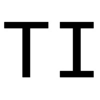
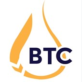

Work History
-
Graduate Student, MIT Chemical Engineering Aug 2023-Present
- Researching electrochemical systems for low-cost hydrogen in the Brushett group.
-

Chemical Engineer, Terraform Industries May 2022-Jul 2023- Designed Sabatier reactor producing 10 Nm3/hr methane from air-captured CO2 and green hydrogen.
- Performed detailed GC analysis confirming greater than 99% CO2 conversion.
- Developed kinetic and thermodynamic models for reactor design.
- Supported recruiting, investor outreach, and business development.
-
Undergraduate Researcher, UC Berkeley Long Lab Nov 2019-Jul 2023
- Studied functionalized porous aromatic frameworks for removing arsenic and chromium from water.
- Work spun out into ChemFinity Tech.
- Combined experimental and computational approaches.
-

Vice President, UC Berkeley Biofuels Technology Club May 2022-May 2023- Organized club projects and outreach around biofuels technology.
-
Research Intern, Stanford University Cargnello Lab Jun 2018-Aug 2019
- Investigated metal nanoparticle sintering on oxide supports.
- Developed Si and ZrO2 nanocapsule reactors with embedded catalysts.